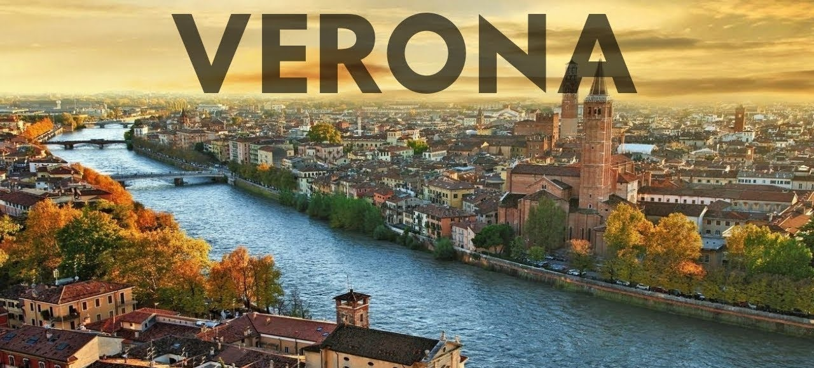
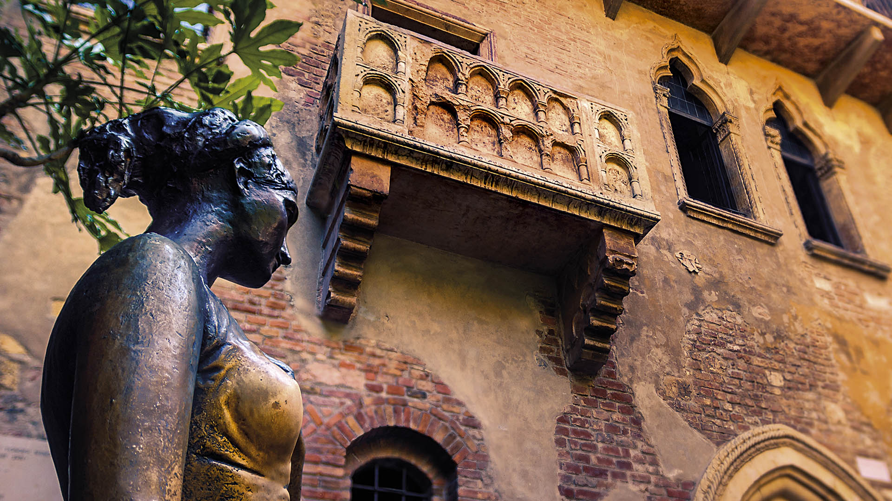
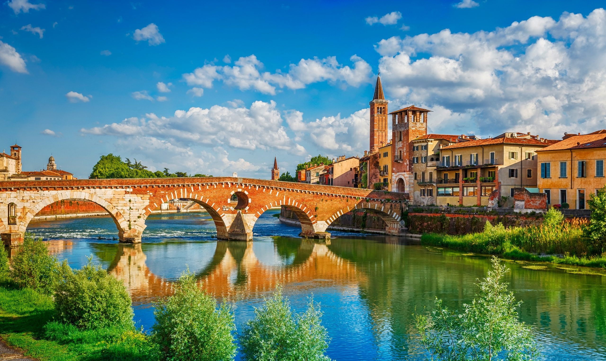
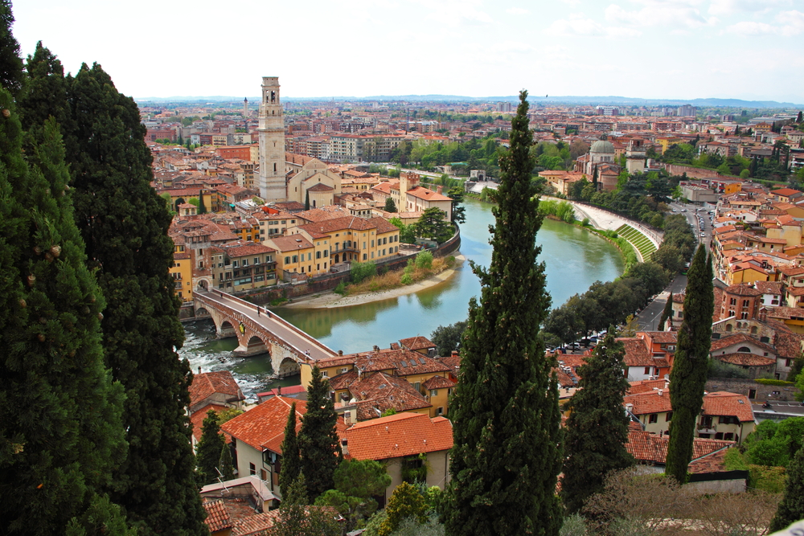
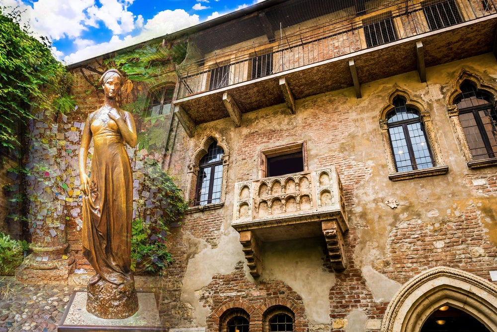
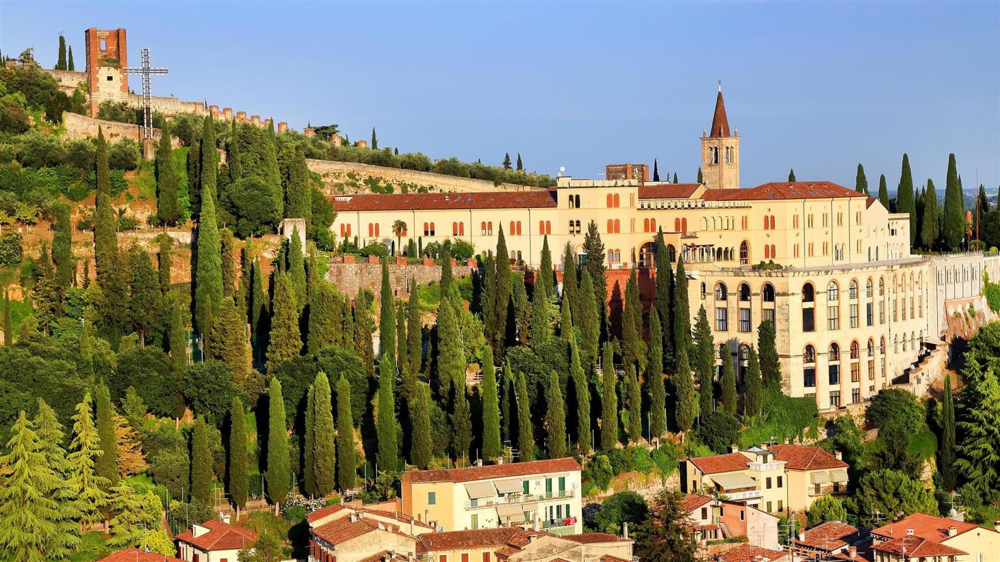
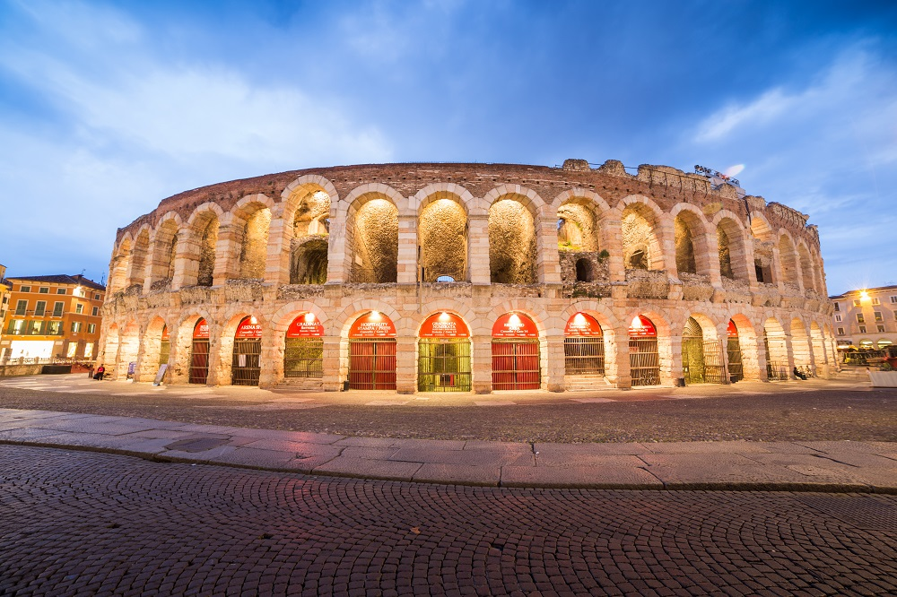

Verona este situată la 59 m peste nivelul mării la poalele dealului San Pietro,
apendicele meridional al munților Lessini, astfel încât orașul răsare de-a lungul râului Adige, în
punctul în care acesta intră în Câmpia Padului, și formează o oază caracteristică de-a lungul a 30 km
la est de lacul Garda.
În timpurile vechi, orașul a fost punct nodal pentru orice tip de transport terestru și acvatic a
Italiei nord-orientale. În timpul romanilor, era punctul de întâlnire a celor patru străzi mari
(strada Gallica, strada Claudia Augusta, strada Vicum Vironensium și strada Postumia).


Adige se observa azi la Verona în interiorul zidurilor care sunt stăvilite după teribila
aluviune din 1882, pentru a proteja orașul de alte revărsări. Acesta azi se limitează la a traversa
orașul în albia sa, dar până în timpuri relativ recente, Verona era un oraș legat perticular cu râul
prin numeroasele căi comerciale și industriale care dezvoltau considerabile feluri de mâncare. Adige
era o cale de comunicare de prima importanță, navigabil până la Trento. A fost utilizat încă din
antichitate pentru transportul de mărfuri și prin urmare parcursul său servea la debarcări.

Se găseau cantoane de taxă vamală, stâlpi utilizați la susținerea lanțurilor, lăzi de
alimente dintr-o parte în alta a râului pentru a reține mărfurile (la Verona se mai găsește azi cea de
lânga munte pe când cea de la vale s-a pierdut), și castele și fortificații.
Un timp, Verona și târgurile care se expuneau aproape de râu aveau o economie legată de prezența apei:
de-a lungul malurilor sale se lucrau blocuri de marmură care erau transportate de-a lungul apei în
șantiere navale, unde se prelucrează pentru industria și activitatea artizanală.



